2018.9.1更新：vultr官方进行了调整，2.5美元套餐只提供ipv6，如果你用不了ipv6，那么你可以买5美元的套餐。
不怕被封ip，因为vultr是折算成小时计费，且可以随时删除和开通服务器，新服务器就是新的ip。新开服务器只需要0.01美元，即使你运气非常不好，开了10台服务器才获得没有被墙的ip，总创建服务器成本也只有0.1美元，不到1块钱。开通服务器时，当出现了ip，不要立马去ping或者用xshell去连接，再等5分钟之后，有个缓冲时间。
自建v2ray教程很简单，整个教程分三步：
第一步：购买VPS服务器
第二步：一键部署VPS服务器
第三步：一键加速VPS服务器 （谷歌BBR加速，推荐）
【前言】
v2ray的优势：v2ray支持的传输方式有很多，包括：普通TCP、HTTP伪装、WebSocket流量、普通mKCP、mKCP伪装FaceTime通话、mKCP伪装BT下载流量、mKCP伪装微信视频流量，不同的传输方式其效果会不同，有可能会遇到意想不到的效果哦！当然国内不同的地区、不同的网络环境，效果也会不同，所以具体可以自己进行测试。现在v2ray客户端也很多了，有windows、MAC、linux和安卓版。
如果想搭建ss，可以参考：[新手向]记录搬瓦工VPS搭建SS详细操作教程
注意：搭建ss脚本和搭建v2ray脚本不要在同一台vps上使用，以免互相干扰！如果ss和v2ray都想搭建，可以用两台vps，一台搭建ss，另外一台搭建v2ray。
第一步：购买VPS服务器
VPS服务器需要选择国外的，首选国际知名的Vultr，速度不错、稳定且性价比高，按小时计费，能够随时开通和删除服务器，新服务器即是新ip。
Vultr注册地址：点我！点我！点我！（全球15个服务器位置可选，KVM框架，最低2.5美元/月。）
Vultr中文网地址：点我！点我！点我！（更新官方最新优惠信息）
虽然是英文界面，但是现在的浏览器都有网页翻译功能，鼠标点击右键，选择网页翻译即可翻译成中文。
注册并邮件激活账号，充值后即可购买服务器。充值方式是支付宝或paypal，使用paypal有银行卡（包括信用卡）即可。paypal注册地址：https://www.paypal.com （paypal是国际知名的第三方支付服务商，注册一下账号，绑定银行卡即可购买国外商品）
2.5美元/月的服务器配置信息：单核 512M内存 20G SSD硬盘 带宽峰值100M 500G流量/月 (仅ipv6)
3.5美元/月的服务器配置信息：单核 512M内存 20G SSD硬盘 带宽峰值100M 500G流量/月
5美元/月的服务器配置信息： 单核 1G内存 25G SSD硬盘 带宽峰值100M 1000G流量/月
10美元/月的服务器配置信息： 单核 2G内存 40G SSD硬盘 带宽峰值100M 2000G流量/月
20美元/月的服务器配置信息： 2cpu 4G内存 60G SSD硬盘 带宽峰值100M 3000G流量/月
40美元/月的服务器配置信息： 4cpu 8G内存 100G SSD硬盘 带宽峰值100M 4000G流量/月
注意：vultr官方进行了调整，2.5美元套餐只提供ipv6，如果你用不了ipv6，那么你可以买5美元的套餐。
vultr实际上是折算成小时来计费的，比如服务器是5美元1个月，那么每小时收费为5/30/24=0.0069美元 会自动从账号中扣费，只要保证账号有钱即可。如果你部署的服务器实测后速度不理想，你可以把它删掉（destroy），重新换个地区的服务器来部署，方便且实用。因为新的服务器就是新的ip，所以当ip被墙时这个方法很有用。当ip被墙时，为了保证新开的服务器ip和原先的ip不一样，先开新服务器，开好后再删除旧服务器即可。
计费从你开通服务器开始算的，不管你有没有使用，即使服务器处于关机状态仍然会计费，如果你没有开通服务器就不算。比如你今天早上开通了服务器，但你有事情，晚上才部署，那么这段时间是会计费的。同理，如果你早上删掉服务器，第二天才开通新的服务器，那么这段时间是不会计费的。在账号的Billing选项里可以看到账户余额。
温馨提醒：同样的服务器位置，不同的宽带类型和地区所搭建的账号的×××速度会不同，这与中国电信、中国联通、中国移动国际出口带宽和线路不同有关，所以以实测为准。可以先选定一个服务器位置来按照教程进行搭建，熟悉搭建方法，当账号搭建完成并进行了bbr加速后，测试下速度自己是否满意，如果满意那就用这个服务器位置的服务器。如果速度不太满意，就一次性开几台不同的服务器位置的服务器，然后按照同样的方法来进行搭建并测试，选择最优的，之后把其它的服务器删掉，按小时计费测试成本可以忽略。
账号充值如图：
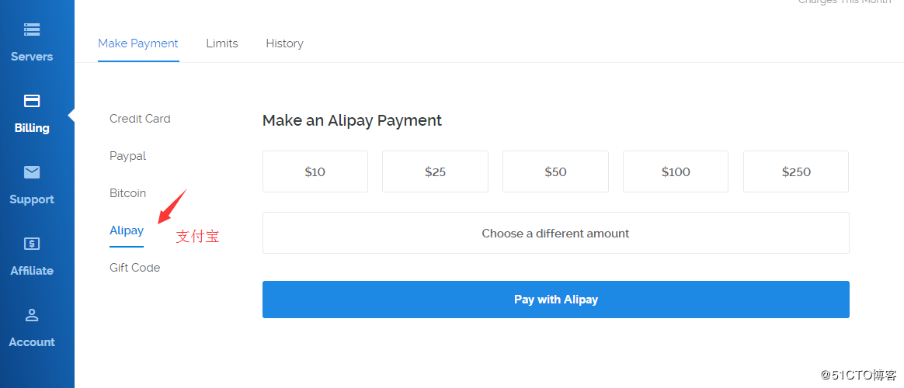
开通服务器步骤如图：
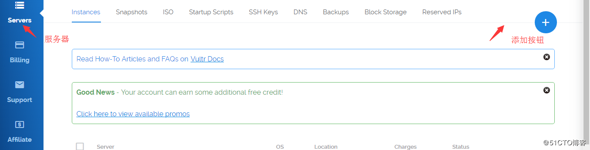
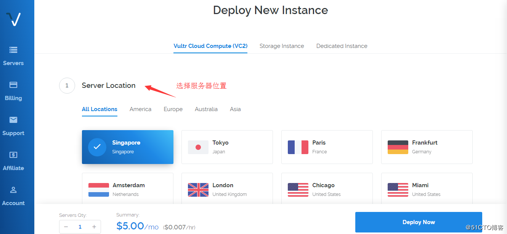
为了配合v2ray一键搭建脚本，vps操作系统推荐选择Debian 8，其它支持系统有Debian 7、Ubuntu 14、Ubuntu 16、CentOS 7。（注意：不支持centos 6系统！centos 6是ss搭建教程的推荐系统，但centos 6不支持v2ray一键搭建脚本！）
开通服务器时，当出现了ip，不要立马去ping或者用xshell去连接，再等5分钟之后，有个缓冲时间。完成购买后，找到系统的密码记下来，部署服务器时需要用到。vps系统（推荐Debian 8）的密码获取方法如下图：
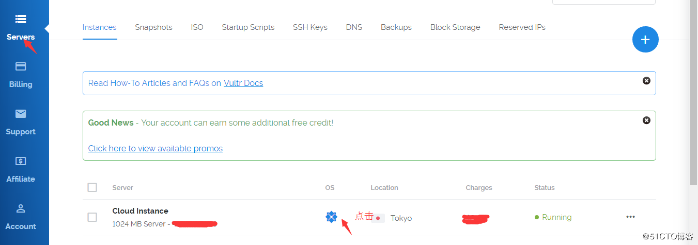
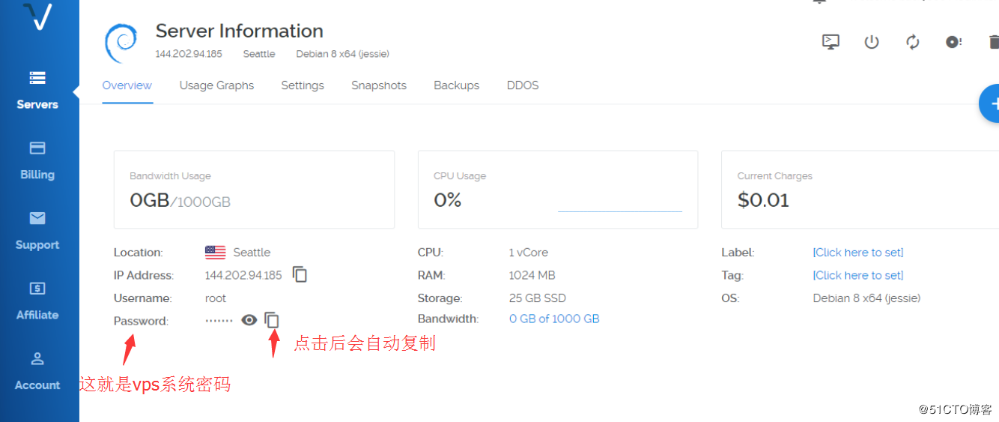
删掉服务器步骤如下图：
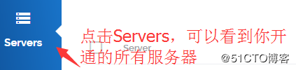
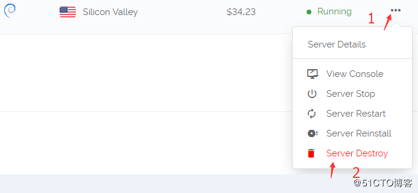
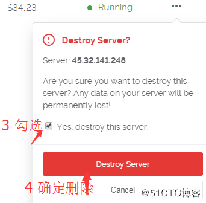
一个被墙ip的vps被删掉后，其ip并不会消失，会随机分配给下一个在这个服务器位置新建服务器的人，这就是为什么开新服务器会有一定几率开到被墙的ip。被墙是指在国内地区无法ping通服务器，但在国外是可以ping通的，vultr是面向全球服务，如果这个被墙ip被国外的人开到了，它是可以被正常使用的，半年或1年后这个被墙的ip可能会被国内防火墙解封，那么这就是一个良性循环。
第二步：部署VPS服务器
购买服务器后，需要部署一下。因为你买的是虚拟东西，而且又远在国外，我们需要一个叫Xshell的软件来远程部署。Xshell windows版下载地址大家可以自行百度搜索。
如果你是苹果电脑操作系统，更简单，无需下载xshell，系统可以直接连接VPS。打开终端（Terminal），输入ssh root@ip 其中“ip”替换成你VPS的ip, 按回车键，然后复制粘贴密码，按回车键即可登录。粘贴密码时有可能不显示密码，但不影响，如果不能用MAC自带的终端连接的话，直接网上搜“MAC连接SSH的软件”，有很多，然后通过软件来连接vps服务器就行，具体操作方式参考windows xshell。
部署教程：
下载windows xshell软件并安装后，打开软件

选择文件，新建
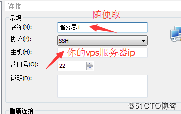
随便取个名字，然后把你的服务器ip填上
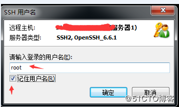
连接国外ip即服务器时，软件会先后提醒你输入用户名和密码，用户名默认都是root，密码是你购买的服务器系统的密码。
如果xshell连不上服务器，没有弹出让你输入用户名和密码的输入框，表明你开到的ip是一个被墙的ip，遇到这种情况，重新开新的服务器，直到能用xshell连上为止，耐心点哦！如果同一个地区开了多台服务器还是不行的话，可以换其它地区。
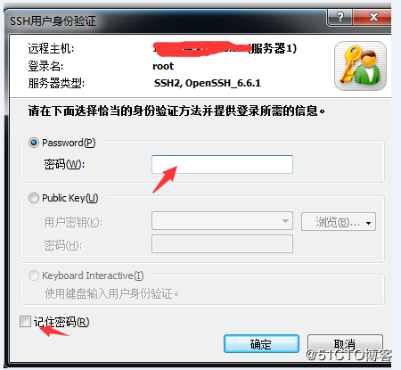
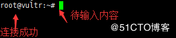
连接成功后，会出现如上图所示，之后就可以复制粘贴代码部署了。
Debian8（推荐）/Debian7/Ubuntu16/Ubuntu14/centos7 v2ray一键部署管理脚本：
安装脚本命令：
apt-get install curl -y
bash -c "$(curl -fsSL https://raw.githubusercontent.com/tracyone/v2ray.fun/master/install.sh)"
卸载脚本命令：
bash -c "$(curl -fsSL https://raw.githubusercontent.com/tracyone/v2ray.fun/master/uninstall.sh)"
———————————————————代码分割线————————————————
复制上面的代码到VPS服务器里，复制代码用鼠标右键的复制，然后在vps里面右键粘贴进去，因为ctrl+c和ctrl+v无效。接着按回车键，脚本会自动安装，以后只需要运行这个快捷命令就可以出现下图的界面进行设置，快捷管理命令为：v2ray
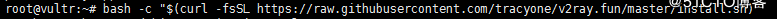
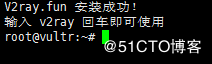
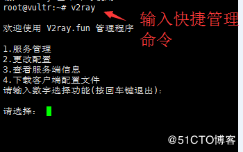
如上图，输入快捷管理命令v2ray后，开始进行v2ray服务端配置。
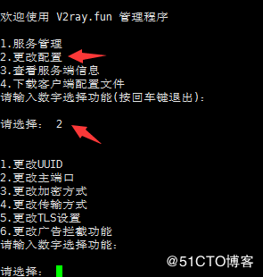
如上图，输入数字2进行更改配置，共有6个子选项，包括：更改UUID、更改主端口、更改加密方式、更改传输方式、更改TLS设置（有域名才行）、更改广告拦截功能。（更改TLS设置和更改广告拦截功能不用设置）
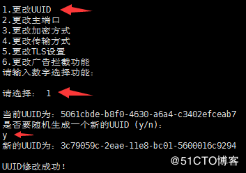
如上图，输入数字1来更改新的UUID号，弹出提示后，输入字母y来确认。

修改UUID号，界面会回到v2ray主界面，重新输入2进入更改配置选项，在输入数字2来更改主端口，主端口范围40～65535，理论上可以任意设置，但不要以0开头！

重新进入更改配置选项，输入数字3来更改加密方式，加密方式有4种，最后1种为不加密。
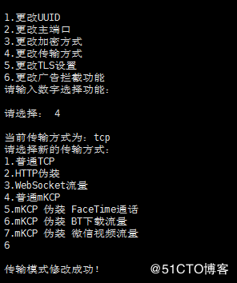
接着，进行传输方式的设置，传输方式共有7种，这个配置对v2ray的速度起着很大的作用，具体哪个最适合你那里的网络环境，需要你自己来尝试。
注意：普通TCP、普通mKCP、mKCP伪装FaceTime通话、mKCP伪装BT下载流量、mKCP伪装微信视频流量可直接设置、不需要域名，HTTP伪装和WebSocket流量需要你有域名，且域名绑定了你的vps服务器ip。
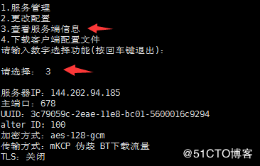
进行了更改配置的设置后，输入数字3可以查看自己设置的v2ray信息。
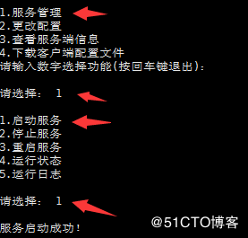
最后一步很关键，那就是启动服务，进入主界面后，输入数字1，然后输入1启动v2ray服务。以后，每次你更改配置或重启vps服务器后都要进行启动服务，请牢记！
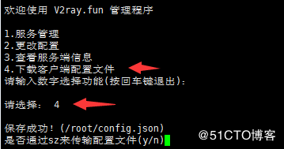
采用xshell软件，可以很方便的将配置文件导出，方便配置v2ray客户端。选择数字4，出现提示后，输入字母y，选择电脑路径即可。
如果你没有用xshell软件，那么无法使用脚本的文件导出功能。vps服务器里面的config.json配置文件存放路径为 /etc/v2ray/config.json MAC电脑用户可以用WinSCP MAC版连接vps服务器，然后根据路径把config.json文件复制出来。
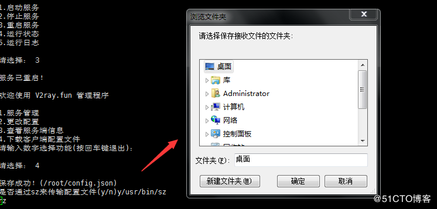
下面这个config.jason文件就是我们刚刚配置的v2ray文件，如果以后更改了v2ray服务端信息，那么你需要重新导出config.jason文件。

因为一键搭建v2ray脚本是一个循环脚本，当你配置结束后不会自动退出快捷管理命令，如果你想退出界面进行其它操作，可以同时按下键盘上的ctrl键和字母z键。
第三步：一键加速VPS服务器
此加速教程为谷歌BBR加速,Vultr的服务器框架可以装BBR加速，加速后对速度的提升很明显，所以推荐部署加速脚本。该加速方法是开机自动启动，部署一次就可以了。
按照第二步的步骤，连接服务器ip，登录成功后，在命令栏里粘贴以下代码：
【谷歌BBR加速教程】
wget --no-check-certificate https://github.com/teddysun/across/raw/master/bbr.sh
chmod +x bbr.sh
./bbr.sh
把上面整个代码复制后粘贴进去，不动的时候按回车，然后耐心等待。最后输入reboot来重启服务器，确保加速生效，bbr加速脚本是开机自动启动，装一次就可以了。
演示开始，如图：
复制并粘贴代码后，按回车键确认
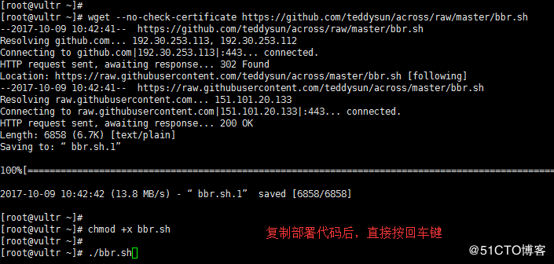
如下图提示，按任意键继续部署
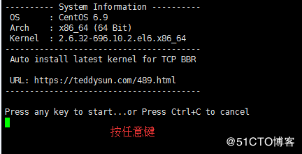
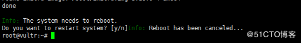
整个部署过程需要2～5分钟，最后输入reboot来重启服务器，确保加速生效，bbr加速脚本是开机自动启动，装一次就可以了。
服务器重启成功并重新连接服务器后，输入命令lsmod | grep bbr 如果出现tcp_bbr字样表示bbr已安装并启动成功。如图：
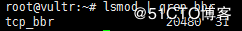
需要注意的是：不管是重启服务器，还是以后想修改之前vps里面的v2ray配置信息，当你重启好服务器或者修改好了v2ray配置信息后，都需要启动v2ray服务端。方式是：输入v2ray，选择1，然后选择1（启动服务）。
【v2ray客户端下载】
以v2ray windows版为例：
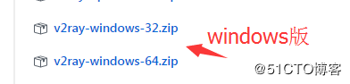
下载windows版客户端后解压出来，然后替换config.json配置文件。

运行上图中的v2ray.exe启动软件，浏览器代理设置成Socks(5) 127.0.0.1 和1080 即可通过v2ray代理上网。


Ctrl+Enter 发布
发布
取消